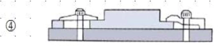

특별한국어능력시험문제(기계·금형 제조업)
Q. 1. 다음 중 절삭가공에 해당되지 않는 것은?
① 선반 작업(Turning)
② 밀링 작업(Milling)
③ 프레스 작업(Pressing)
④ 드릴링 작업(Drilling)
Right Ans:- ③ 프레스 작업(Pressing)
Q. 2. 다음 중 회전 공구에 의한 가공이 아닌 것은?
① 선삭(Turning)
② 밀링(Milling)
③ 보링(Boring)
④ 드릴링(Drilling)
Right Ans:- ① 선삭(Turning)
Q. 3. 공작기계의 구비조건으로 거리가 먼 것은?
① 높은 정밀도를 가질 것
② 가공능력이 클 것
③ 고장이 적고 효율이 좋을 것
④ 가격이 비싸고 운전비용이 저렴할 것
Right Ans:- ④ 가격이 비싸고 운전비용이 저렴할 것
Q. 4. 다음 중 고정입자에 의한 가공은?
① 호닝(Honing)
② 래핑(Lapping)
③ 액체 호닝(Liquid honing)
④ 배럴 가공(Barrel working)
Right Ans:- ① 호닝(Honing)
Q. 5. 아래 그림의 공작기계는 무엇인가?
① 선반(Lathe)
② 밀링머신(Milling machine)
③ 보링머신(Boring machine)
④ 드릴링머신(Drilling machine)
Right Ans:- ② 밀링머신(Milling machine)
Q. 6. 아래 그림은 어떤 공작기계에서 사용되는 장치인가?
① 선반(Lathe)
② 밀링머신(Milling machine)
③ 보링머신(Boring machine)
④ 드릴링머신(Drilling machine)
Right Ans:- ① 선반(Lathe)
Q. 7. 공작물과 절삭공구가 모두 직선운동을 하는 공작기계는?
① 선반(Lathe)
② 보링머신(Boring machine)
③ 호닝머신(Honing machine)
④ 플레이너(Planer)
Right Ans:- ④ 플레이너(Planer)
Q. 8. 가공 시 칩(Chip)을 발생시키지 않는 공작기계는?
① 연삭기(Grinding machine)
② 호닝머신(Honing machine)
③ 밀링머신(Milling machine)
④ 프레스기(Press machine)
Right Ans:- ④ 프레스기(Press machine)
Q. 9. 절삭온도에 관한 설명 중 틀린 것은?
① 가공물의 경도가 높을수록 높아진다.
② 온도가 높아지면 공구수명이 단축된다.
③ 공구와 공작물의 마찰이 적을수록 높아진다.
④ 온도가 상승하면 열팽창으로 인해 치수변화가 발생된다.
Right Ans:- ③ 공구와 공작물의 마찰이 적을수록 높아진다.
Q. 10. 공작기계 안내면에 관한 설명 중 틀린 것은?
① 가공이 용이해야 한다.
② 정밀도 유지를 위해 틈새(clearance)를 가능한 적게 한다.
③ 내마모성이 크고 미끄럼(sliding)이 원활해야 한다.
④ 내마모성을 높이기 위해 풀림(annealing)을 실시한다.
Right Ans:- ④ 내마모성을 높이기 위해 풀림(annealing)을 실시한다.
Q. 11. 공작기계의 몸체(body)에 관한 설명 중 틀린 것은?
① 진동을 흡수할 수 있는 구조여야 한다.
② 외력에 견딜 수 있는 강성이 있어야 된다.
③ 응력변형을 방지하기 위해 전체 담금질(quenching)을 한다.
④ 몸체의 재료는 주로 인장강도가 높은 고급 주철을 사용한다.
Right Ans:-③ 응력변형을 방지하기 위해 전체 담금질(quenching)을 한다.
Q. 12. 공작기계의 기본운동과 거리가 먼 것은?
① 회전운동(rotation motion)
② 이송운동(feed motion)
③ 절삭운동(cutting motion)
④ 위치조정운동(positioning motion)
Right Ans:-① 회전운동(rotation motion)
Q. 13. 아래 그림은 어떤 가공을 나타낸 것인가?
① 보링(boring)
② 밀링(milling)
③ 리밍(reaming)
④ 드릴링(drilling)
Right Ans:-④ 드릴링(drilling)
Q. 14. 선반, 밀링머신, 드릴링머신 등의 기계를 한 대로 조합하여 제작한 공작기계는?
① 범용 공작기계(general purpose machine)
② 전용 공작기계(special machine)
③ 만능 공작기계(universal purpose machine)
④ 표준 공작기계(standard machine)
Right Ans:- ③ 만능 공작기계(universal purpose machine)
Q. 15. 그림과 같은 가공을 할 수 있는 공작기계는?
① 선반(lathe)
② 밀링머신(milling machine)
③ 드릴링머신(drilling machine)
④ 슈퍼피니싱(super finishing)
Right Ans:- ② 밀링머신(milling machine)
Q. 16. 절삭유(cutting fluids)의 사용 목적에 관한 설명 중 틀린 것은?
① 공구의 인선을 냉각시켜 공구의 경도저하를 방지한다.
② 가공물을 냉각시켜 열에 의한 정밀도 저하 방지한다.
③ 칩(chip)을 씻어주고 가공표면을 양호하게 한다.
④ 안내면(slide way)에 윤활작용을 한다.
Right Ans:- ④ 안내면(slide way)에 윤활작용을 한다.
Q. 17. 절삭유의 구비조건에 관한 설명 중 틀린 것은?
① 방청 및 방식성이 좋아야 한다.
② 인화점 및 발화점이 낮아야 한다.
③ 냉각성, 유동성, 윤활성이 우수해야 한다.
④ 인체에 해가 없고 악취가 나지 않아야 한다.
Right Ans:- ② 인화점 및 발화점이 낮아야 한다.
Q. 18. 물과 원액을 혼합하여 사용하며 점성이 낮고 냉각효과가 우수하여 고속절삭 및 연삭 가공액으로 많이 사용되는 절삭유는?
① 광유(mineral oil)
② 유화유(emulsion oil)
③ 수용성 절삭유(soluble oil)
④ 지방질유(fatty oil)
Right Ans:- ③ 수용성 절삭유(soluble oil)
Q. 19. 다음 중 절삭온도 측정방법에 대해 잘못 설명한 것은?
① 칩(chip)의 색깔에 의한 측정
② 절삭유의 온도에 의한 측정
③ 칼로리메터(calorimeter)에 의한 측정
④ 열전대(thermo-couple)에 의한 측
Right Ans:- ② 절삭유의 온도에 의한 측정
Q. 20. 아래 그림과 같이 기어(gear)를 가공하는 공작기계의 명칭은 무엇인가?
① 셰이퍼(shaping machine)
② 호빙머신(hobing machine)
③ 호닝머신(honing machine)
④ 브로우칭머신(broaching machine)
Right Ans:- ② 호빙머신(hobing machine)
Q. 21. 선반에서 가공할 수 없는 작업은?
① 테이퍼(taper) 절삭
② 나사(thread) 절삭
③ 기어(gear) 절삭
④ 편심(eccentricity) 절삭
Right Ans:- ③ 기어(gear) 절삭
Q. 22. 보통선반의 크기를 나타내는 방법 중 틀린 것은?
① 베드(bed) 상의 스윙(swing)
② 왕복대 위의 스윙
③ 양 센터(center) 사이의 거리
④ 바닥에서 센터까지의 높이
Right Ans:-④ 바닥에서 센터까지의 높이
Q. 23. 아래 그림에서 척(chuck)에 대해 바르게 설명한 것은?
① 연동척(universal chuck)이다
② 편심(eccentricity)가공을 할 수 있다
③ 1개의 조(jaw)를 돌리면 4개의 조가 동시에 움직인다.
④ 초보자도 쉽고 빠르게 가공물의 중심을 맞출 수 있다.
Right Ans:- ② 편심(eccentricity)가공을 할 수 있다
Q. 24. 아래 그림의 공구(tool)에 대한 설명으로 맞지 않는 것은?
① 선반(lathe)에서 사용된다.
② 주로 내경가공에 사용된다.
③ 엔드밀이라고 한다.
④ 인서트 팁(insert tip)의 교환이 불가능하다.
Right Ans:- ① 선반(lathe)에서 사용된다.
Q. 25. 절삭속도(cutting speed)의 단위를 바르게 나타낸 것은?
① m/min
② mm/min
③ mm/rev
④ rpm
Right Ans:- ① m/min
Q. 26. 선반에서 지름이 30mm인 탄소강을 1200rpm으로 가공할 때 절삭속도는?
① 113 m/min
② 113 mm/min
③ 1130 m/min
④ 1130 mm/min
Right Ans:- ① 113 m/min
Q. 27. 선반가공시 연속적으로 생성되는 칩(chip)을 짧게 끊어지도록 하기 위해 만든 것은?
① 노즈(nose) 반경
② 여유각(clearance angle)
③ 치핑(chipping)
④ 칩 브레이커(chip breaker)
Right Ans:- ④ 칩 브레이커(chip breaker)
Q. 28. 사진 속 선반용 부속품에 관해 설명한 것 중 틀린 것은?
① 회전센터(live center)라고 한다.
② 센터의 자루(shank)는 모스테이퍼(morse taper)로 제작한다 .
③ 길이가 긴 공작물을 지지할 때 사용된다.
④ 심압축(tail stock)에 꽂아서 사용한다 .
Right Ans:- ① 회전센터(live center)라고 한다.
Q. 29. 구성인선(built-up edge)이 발생하지 않는 조건에 대한 설명으로 틀린 것은?
① 절삭 속도를 크게 한다.
② 절삭 깊이(depth of cut)를 크게 한다.
③ 공구의 날 끝을 예리하게 한다.
④ 공구의 윗면 경사각(rake angle)을 크게 한다.
Right Ans:- ② 절삭 깊이(depth of cut)를 크게 한다.
Q. 30. 선반에서 가늘고 긴 공작물을 가공할 때 사용하는 부속장치는?
① 면판(face plate)
② 돌림판(driving plate)
③ 방진구(work rest)
④ 맨드릴(mandrel)
Right Ans:- ③ 방진구(work rest)
Q. 31. 선반에서 지름이 80mm인 공작물을 절삭속도 302m/min으로 가공하고 있다면 이때의 주축회전수는 얼마인가?
① 1000rpm
② 1200rpm
③ 1400rpm
④ 1600rpm
Right Ans:- ② 1200rpm
Q. 32. 그림은 선반에서 무슨 가공을 하는 것인가?
① 널링(knurling) 가공
② 테이퍼(taper) 가공
③ 릴리빙(relieving) 가공
④ 보링(boring) 가공
Right Ans:- ① 널링(knurling) 가공
Q. 33. 선반의 내경절삭(boring)에 관한 설명 중 틀린 것은?
① 외경바이트에 비해 진동이 심하다.
② 바이트를 최대한 길게 고정한다.
③ 외경절삭에 비해 이송을 느리게 한다.
④ 생크(shank)는 가능한 굵은 것을 사용한다.
Right Ans:- ② 바이트를 최대한 길게 고정한다.
Q. 34. 심압대를 이용하여 아래 도면과 같은 가공물 테이퍼를 가공할 때의 편위량은?
① 5mm
② 6mm
③ 7mm
④ 8mm
Right Ans:- ② 6mm
Q. 35. 선반에서 테이퍼를 가공하는 방법이 아닌 것은?
① 복식 공구대(compound tool post)를 경사시키는 방법
② 심압대(tail stock)를 편위시키는 방법
③ 테이퍼 절삭장치(taper attachment)를 이용하는 방법
④ 왕복대(carriage)를 회전시키는 방법
Right Ans:- ④ 왕복대(carriage)를 회전시키는 방법
Q. 36. 그림과 같이 편심(eccentricity)가공을 할 때 가공방법에 관한 설명 중 틀린 것은?
① 연동척에서 가공할 수 있다.
② 이송을 천천히 하고 절삭속도를 느리게 한다.
③ 다이얼게이이지의 이동량은 편심량X2로 맞춘다.
④ 충격절삭이 이루어지므로 공작물을 견고하게 고정한다.
Right Ans:- ① 연동척에서 가공할 수 있다.
Q. 37. 선반에서 지름 50mm의 탄소강재를 회전수 1000rpm, 이송 0.2mm/rev, 길이 50mm를 1회 가공할 때 소요되는 시간은?
① 20초
② 40초
③ 60초
④ 80초
Right Ans:- ① 20초
Q. 38. 다음 중 밀링머신의 몸체(body)에 해당되지 않는 것은?
① 컬럼(column)
② 테이블(table)
③ 니(knee)
④ 왕복대(carriage)
Right Ans:- ④ 왕복대(carriage)
Q. 39. 아래 장치에 대한 설명으로 바른 것은?
① 선반(lathe)에서 사용되는 장치이다.
② 회전테이블(circular table)이라 한다.
③ 원주분할, 기어가공 등을 할 수 있다.
④ 편심(eccentricity)가공을 할 수 있다.
Right Ans:- ③ 원주분할, 기어가공 등을 할 수 있다.
Q. 40. 밀링머신에서 하향절삭(down cutting)에 관한 설명 중 틀린 것은?
① 백 래시(back lash)의 영향을 받지 않는다.
② 상향절삭(up cutting)에 비해 공구수명이 길다.
③ 가공면이 깨끗하고 고정밀 절삭이 가능하다.
④ 절삭가공시 마찰력은 적으나 큰 충격력이 발생된다.
Right Ans:-① 백 래시(back lash)의 영향을 받지 않는다.
Q. 41. 밀링가공시 절삭속도 선정방법에 관한 설명 중 틀린 것은?
① 커터의 수명을 연장하기 위해서 추천 절삭속도보다 약간 높게 설정한다.
② 공작물의 경도, 강도, 인성 등의 기계적 성질을 고려한다.
③ 거친 절삭에서는 절삭 속도를 느리게, 이송 속도를 빠르게, 절삭 깊이를 크게 한다.
④ 커터의 날이 빠르게 마멸되거나 손상이 되면 절삭속도를 좀 더 낮게 한다.
Right Ans:-① 커터의 수명을 연장하기 위해서 추천 절삭속도보다 약간 높게 설정한다.
Q. 42. 밀링작업에서 떨림(chattering)을 줄일 수 있는 방법이 아닌 것은?
① 공작물을 단단히 고정한다.
② 백 래시(back lash)를 최대한 줄인다.
③ 공구는 최대한 길게 고정시킨다.
④ 절삭 깊이를 적게 한다.
Right Ans:- ③ 공구는 최대한 길게 고정시킨다.
Q. 43. 연삭가공의 특징에 관한 설명 중 틀린 것은?
① 경화된 강과 같은 단단한 재료를 가공할 수 있다.
② 정밀도가 높고 표면거칠기가 우수한 다듬질면을 얻을 수 있다.
③ 절삭속도가 대단히 느리다.
④ 연삭점의 온도가 매우 높다.
Right Ans:- ③ 절삭속도가 대단히 느리다.
Q. 44. 연삭숫돌의 3요소를 바르게 짝지은 것은?
① 입자(abrasive)-결합제(bond)-기공(pore)
② 입도(grain size)-결합도(grade)-기공(pore)
③ 입자(abrasive)-결합도(grade)-기공(pore)
④ 입도(grain size)-결합제(bond)-기공(pore)
Right Ans:- ① 입자(abrasive)-결합제(bond)-기공(pore)
Q. 45. 아래 그림과 같이 볼트 또는 너트의 머리 부분이 가공물 안으로 묻히도록 가공하는 방법을 무엇이라 하는가?
① 리밍(reaming)
② 보링(boring)
③ 카운터 보링(counter boring)
④ 카운터 싱킹(counter sinking)
Right Ans:- ③ 카운터 보링(counter boring)
Q. 46. 드릴(drill)의 파손원인이 아닌 것은?
① 이송이 너무 커서 절삭저항이 증가할 때
② 구멍에 칩(chip)이 배출되지 못할 때
③ 드릴을 너무 짧게 고정시켰을 때
④ 절삭날이 규정된 각도와 형상으로 연삭되지 않았을 때
Right Ans:-③ 드릴을 너무 짧게 고정시켰을 때
Q. 47. 줄(file) 작업시 주의사항 중 틀린 것은?
① 줄을 밀 때 체중을 몸에 가하여 민다.
② 눈은 항상 가공물을 바라본다.
③ 줄을 당길 때 가공물에 압력을 가한다.
④ 팔꿈치를 옆구리에 밀착시켜 줄과 수평이 되게 한다.
Right Ans:- ③ 줄을 당길 때 가공물에 압력을 가한다.
Q. 48. 탭핑(tapping)작업에 관한 설명 중 틀린 것은?
① 암나사를 가공하는 작업이다.
② 탭이 경사지지 않게 가공한다.
③ 드릴의 지름은 수나사 지름에서 나사피치를 뺀 값과 같다.
④ 탭작업을 원활히 하기 위해 최대한 긴 탭핸들을 사용한다.
Right Ans:-④ 탭작업을 원활히 하기 위해 최대한 긴 탭핸들을 사용한다.
Q. 49. M10 TAP을 가공하려 한다. 이 때 드릴지름은 얼마로 해야 하는가? 단, 피치(pitch)는 1.5mm이다.
① 7.5mm
② 8mm
③ 8.5mm
④ 9mm
Right Ans:- ③ 8.5mm
Q. 50. 드릴(drill)의 표준 선단 각은 몇 도인가?
① 45°
② 98°
③ 118°
④ 128°
Right Ans:- ③ 118°
Q. 51. 다음의 CNC 공작기계의 종류와 사용처의 연결 중 잘못된 것은?
① CNC선반, 머시닝센터 : 절삭가공
② CNC 평면연삭기, CNC 원통연삭기 : 연삭가공
③ CNC 와이어컷 방전가공기 : 방전가공
④ CNC 초음파가공기, CNC 레이저가공기 : 전주가공
Right Ans:-④ CNC 초음파가공기, CNC 레이저가공기 : 전주가공
Q. 52. CNC 공작기계의 구비 조건 중 적당하지 않는 것은?
① 절삭 가공의 능률이 좋을 것
② 동력손실이 크고 치수 정밀도가 좋을 것
③ 조작이 용이하고 안전성이 높을 것
④ 기계의 강성이 높을 것
Right Ans:-② 동력손실이 크고 치수 정밀도가 좋을 것
Q. 53. 수치제어 자동화 시스템의 발달 과정을 4단계로 분류한 것이다. 맞는 것은?
① NC → CNC → DNC → FMS
② DNC → NC → CNC → FMS
③ FMS → NC → CNC → DNC
④ NC → DNC → CNC → FMS
Right Ans:-① NC → CNC → DNC → FMS
Q. 54. CNC 공작기계에 사용되는 서보(SERVO)기구 중 위치검출 회로가 없는 방식은?
① 반폐쇄회로 방식
② 폐쇄회로 방식
③ 개방회로 방식
④ 하이브리드 서보 방식
Right Ans:- ③ 개방회로 방식
Q. 55. 범용 공작기계에서 사람의 손, 발과 같은 기능이 CNC 공작 기계에서는 어느 부분 에서 이루어지는가?
① 컨트롤러
② 볼 스크루
③ 리졸버
④ 서보기구
Right Ans:- ④ 서보기구
Q. 56. CNC 공작기계에서 작업을 수행하기 위한 제어방식이 아닌 것은?
① 위치 결정 제어
② 직선 절삭 제어
③ 평면 절삭 제어
④ 윤곽 절삭 제어(연속절삭)
Right Ans:- ③ 평면 절삭 제어
Q. 57. CNC 공작기계의 테이블 이송장치에 사용되는 나사로 백 래쉬(Back lash)의 오차를 줄이기 위해 사용하는 기계부품은?
① 볼 나사
② 톱니 나사
③ 사각 나사
④ 사다리꼴 나사
Right Ans:- ① 볼 나사
Q. 58. CNC 공작기계의 서보기구 형식에서 모터축으로부터 위치검출과 속도를 검출하는 방법으로 신뢰도가 높아 대부분의 CNC 공작기계에서 사용되는 방식은?
① 개방회로 방식
② 반폐쇄회로 방식
③ 폐쇄회로 방식
④ 반개방회로 방식
Right Ans:- ② 반폐쇄회로 방식
Q. 59. 머시닝센터의 특징을 설명한 것 중 해당하지 않는 것은?
① 원통형상의 공작물을 다른 CNC공작기계에 비해 능률적으로 가공할 수 있다.
② 밀링, 드릴링, 태핑, 보링 작업 등을 연속공정으로 가공할 수 있다.
③ 윤곽절삭 및 곡면가공과 같이 어려운 작업을 손쉽게 수행할 수 있다.
④ ATC를 비롯하여 APC 장치, Robot 및 자동 창고장치를 갖추어 FMS의 실현을 가능 하게 한다.
Right Ans:-① 원통형상의 공작물을 다른 CNC공작기계에 비해 능률적으로 가공할 수 있다.
Q. 60. 다음 중 CNC 공작기계의 장점이 아닌 것은?
① 제품의 균일성이 향상된다.
② 작업시간 단축으로 생산성이 향상된다.
③ 특수공구의 제작으로 공구관리비가 많이 소요된다.
④ 범용 공작기계로 가공하기 어려운 형상을 쉽게 가공할 수 있다.
Right Ans:- ③ 특수공구의 제작으로 공구관리비가 많이 소요된다.
Q. 61. 머시닝센터의 모드스위치 종류와 설명의 연결로 잘못된 것은?
① EDIT(편집) : 프로그램을 등록, 수정, 삭제한다.
② AUTO(자동) : 등록된 프로그램을 자동 운전한다.
③ MDI(반자동) : 수동으로 데이터를 부분적으로 입력하여 운전한다.
④ HANDLE(핸들) : 버튼을 눌러 각 축을 연속으로 고속 이송한다.
Right Ans:-④ HANDLE(핸들) : 버튼을 눌러 각 축을 연속으로 고속 이송한다.
Q. 62. 기계작동 시 이상이 발생되는 경우 사용하는 기능의 버튼으로 기계의 작동을 순간 적으로 멈추게 하는 조작판넬의 요소는?
① 드라이런
② 싱글 블록
③ 급송이송 오버라이드
④ 비상정지
Right Ans:- ④ 비상정지
Q. 63. 다음의 G-Code “G97 S100 M03"에서 1분당 회전수(rpm)는?
① 10
② 100
③ 200
④ 500
Right Ans:- ② 100
Q. 64. CNC 선반 작업시 발생하는 구성 인선을 감소시키는 방법으로 옳지 않은 것은?
① 절삭속도를 고속으로 한다.
② 공구 상면 경사각을 작게 한다.
③ 절삭 깊이를 깊게 한다.
④ 마찰저항이 큰 공구를 사용한다.
Right Ans:- ④ 마찰저항이 큰 공구를 사용한다.
Q. 65. 다음 중 CNC 프로그램의 어드레스(address)와 그 기능이 잘못 연결된 것은?
① 준비기능 : G
② 이송기능 : F
③ 주축기능 : S
④ 휴지(dwell) : M
Right Ans:- ④ 휴지(dwell) : M
Q. 66. 머시닝센터에서 M8×1.25p의 탭공구를 사용하여 탭가공을 하려고 한다. 회전수는 1분당 100회전(100rpm)을 사용하려고 할 때 피드(Feed)값으로 맞는 것은?
① 100
② 125
③ 150
④ 200
Right Ans:- ② 125
Q. 67. CNC 선반에서 φ50 환봉을 외경 가공하려고 한다. 절삭속도가 가장 빠른 G 코드는?
① G96 S100
② G97 S100
③ G96 S150
④ G97 S150
Right Ans:- ③ G96 S150
Q. 68. 머시닝센터 프로그래밍에서 공구 교환을 지령하는 보조 기능은?
① M06
② M09
③ M30
④ M99
Right Ans:- ① M06
Q. 69. 재료 기호가 “STD 10"으로 표기되어 있을 경우 이 재료는 KS에서 무슨 재료일까?
① 기계 구조용 합금강
② 탄소 공구강
③ 기계 구조용 탄소강
④ 합금 공구강
Right Ans:- ④ 합금 공구강
Q. 70. 머시닝센터에서 공구를 자동으로 장착하고 교환하는 장치는?
① ATC
② APC
③ ATP
④ APT
Right Ans:- ① ATC
Q. 71. 다음의 기계가공 방법 중 선반 작업시 안전사항으로 틀린 것은?
① 기계 위에 공구나 재료를 올려놓지 않는다.
② 이송을 걸은 채로 기계를 정지시키지 않는다.
③ 빠른 생산을 위해 기계 타력 회전을 손이나 공구로 멈추게 한다.
④ 가공물 절삭공구의 장착은 확실하게 한다.
Right Ans:-③ 빠른 생산을 위해 기계 타력 회전을 손이나 공구로 멈추게 한다.
Q. 72. 다음의 기계가공 방법 중 선반 작업시 안전사항으로 틀린 것은?
① 절삭공구의 장착은 짧게 하고 절삭성이 나쁘면 일찍 바꾼다.
② 칩의 비산 시 보안경을 착용하고 비산을 막는 차폐 막을 설치한다.
③ 절삭 또는 회전 중 공작물을 측정하지 않으며, 칩 제거 시는 브러시나 긁기봉을 사용한다.
④ 작업 중에는 안전을 위해 손에 장갑을 낀다.
Right Ans:-④ 작업 중에는 안전을 위해 손에 장갑을 낀다.
Q. 73. 선반 작업시 안전 사항으로 틀린 내용은?
① 척이 회전하는 도중에 일감이 튀어나오지 않도록 확실히 고정한다.
② 항상 비상 정지 버튼의 위치를 확인하고 있어야 한다.
③ 기계에 공구나 가공물을 설치할 때에는 반드시 기계 정지 후에 한다.
④ 가공 칩은 반드시 기계 정지 후 손이나 측정기를 이용하여 제거한다.
Right Ans:-④ 가공 칩은 반드시 기계 정지 후 손이나 측정기를 이용하여 제거한다.
Q. 74. 밀링 작업을 시작하기 전 설비를 점검하여야 한다. 작업시작 전 점검 사항으로 틀린 것은?
① 기계의 각 부분을 점검한다.
② 기계 주위와 사용 공구의 정리·정돈을 한다.
③ 전원 및 각종 스위치를 확인한다.
④ 작업의 편리를 위해 평소 복장으로 작업한다.
Right Ans:-
Q. 75. 밀링 작업 혹은 선반 작업 도중에는 안전에 각별히 유의하여야 한다. 작업 도중에 작업자가 유의하여야 할 사항으로 틀린 것은?
① 회전부분에 절대 손대지 않아야 한다.
② 장갑을 끼고 작업하지 않아야 한다.
③ 선반 작동 중 자리를 이탈하지 않아야 한다.
④ 정전일 때는 다음 작업을 위해 전원을 켜놓는다.
Right Ans:-④ 정전일 때는 다음 작업을 위해 전원을 켜놓는다.
Q. 76. 기계 가공 작업이 끝나면 작업자 안전 및 다음 작업 준비를 위해 후처리를 해야 한다. 다음 중 작업 완료 후 처리 사항으로 틀린 것은?
① 사용한 모든 공구를 정리·정돈한다.
② 모든 전원 스위치는 차단하고 이송장치 등을 원위치 시킨다.
③ 칩 제거와 기계 주위청소 및 정리·정돈을 한다.
④ 기계수리, 측정 등은 기계가 완전히 멈추기 전이라도 빠른 시간에 해야 한다.
Right Ans:-④ 기계수리, 측정 등은 기계가 완전히 멈추기 전이라도 빠른 시간에 해야 한다.
Q. 77. CNC 선반 작업시 유의사항 중 옳지 않은 것은?
① 가공물을 장착하거나 끄집어 낼 때는 반드시 스위치를 끄고 바이트를 충분히 연 다음 한다.
② 안전을 위해 심압대는 스핀들을 가능한 길게 내어 놓는다.
③ 가공물의 장착이 끝나면 척, 렌치류는 곧 벗겨 놓는다.
④ 무게가 편중된 가공물의 장착에는 균형추를 부착하며 장착물은 방진구에 사용커버를 씌운다.
Right Ans:-② 안전을 위해 심압대는 스핀들을 가능한 길게 내어 놓는다.
Q. 78. 다음의 내용은 CNC 선반 작업시의 안전 사항이다. 제시한 사항 중 틀린 것은?
① CNC 선반 공작물은 무게중심을 맞춰야 안전하다.
② CNC 선반에서 나사가공시 Feed Override는 100%로 해야 한다.
③ 바이트의 자루는 가능한 굵고 짧은 것을 사용한다.
④ 드릴은 Chip의 배출이 어려우므로, 가능한 절삭속도를 크게 해야 한다.
Right Ans:- ④ 드릴은 Chip의 배출이 어려우므로, 가능한 절삭속도를 크게 해야 한다.
Q. 79. 머시닝센터 작업시 유의사항 중 옳지 않은 것은?
① 사용 전에 기계·기구를 점검하고 시운전해 본다.
② 일감은 테이블 또는 바이스에 안전하게 고정하여야 한다.
③ 커터의 제거 혹은 설치는 작업 중이더라도 빠르게 설치한다.
④ 회전하는 커터에 손을 대지 않는다.
Right Ans:-③ 커터의 제거 혹은 설치는 작업 중이더라도 빠르게 설치한다.
Q. 80. CNC 공작기계에서 전원을 투입한 후 기계운전을 안전하게 하기 위한 첫 번째 조작은?
① 프로그램 편집
② 공작물 좌표계 설정
③ 기계 원점복귀
④ 수동 Mode로 주축 회전
Right Ans:- ③ 기계 원점복귀
Q. 81. CNC 공작기계의 운전을 위한 준비사항은 여러 가지가 있다. 작업 준비사항으로 제시한 내용 중 옳지 않은 것은?
① 작업시 안전을 위해 장갑을 낀다.
② 절삭가공 전 반드시 프로그램을 확인한다.
③ 공작물의 고정에 유의한다.
④ 공구경로에 유의한다.
Right Ans:-① 작업시 안전을 위해 장갑을 낀다.
Q. 82. CNC 공작기계를 사용하는 작업자의 경우, 작업 도중 안전에 주의하여야 한다. 일반 적인 안전 사항 중 잘못된 것은?
① 기계의 움직이는 테이블 위에는 공구나 기타 물건을 올려놓지 않는다.
② 작업 중 보안경 및 안전화를 착용한다.
③ 기계주위는 항상 밝게 하여 작업하고, 건조하게 유지한다.
④ 강전반, 조작반 등의 먼지나 칩은 압축공기를 사용하여 제거한다.
Right Ans:-④ 강전반, 조작반 등의 먼지나 칩은 압축공기를 사용하여 제거한다.
Q. 83. CNC 방전기의 작업시 안전 수칙으로 잘못된 것은?
① 장시간 무인운전은 원칙적으로 피해야 한다.
② 가공액은 비용 절감을 위해 저렴한 것만을 가공액으로 사용해야 한다.
③ 점검 보수를 위하여 컨트롤러의 내부를 열 때에는 반드시 전원을 차단한다.
④ 운전 중에 전극을 만지면 감전의 위험이 있으므로 함부로 만지지 않는다.
Right Ans:- ② 가공액은 비용 절감을 위해 저렴한 것만을 가공액으로 사용해야 한다.
Q. 84. CNC 방전기는 작업 중 화재위험이 있다. 화재 발생 위험이 높은 경우로 잘못 제시된 것은?
① 이상 방전이 전혀 없을 때
② 가공액이 가공탱크에 충분하지 않은 상태에서 큰 출력으로 작업할 때
③ 가공부위에 인화성이 높은 물체가 있을 때
④ 졸음 등으로 작업자가 주의를 소홀히 할 때
Right Ans:- ① 이상 방전이 전혀 없을 때
Q. 85. CNC 방전가공기의 정기점검 항목으로 잘못된 것은?
① 윤활유(1일 1∼2회)와 그리스(월 1회)는 주기적으로 주입한다.
② 설비 각부의 볼트 조임 상태의 점검은 6개월마다 시행한다.
③ 가공액 여과기의 필터는 적절한 시기에 교환해야 한다.
④ 기계의 사용 후에는 청결상태를 유지할 수 있도록 청소한다.
Right Ans:- ② 설비 각부의 볼트 조임 상태의 점검은 6개월마다 시행한다.
Q. 86. 다음의 점검 사항은 머시닝센터의 일일 점검 사항이다. 다음 중 매년 점검사항으로도 충분한 항목은?
① 외관 점검
② 유량 점검
③ 각부의 작동 점검
④ 기계 본체의 레벨 점검 및 조정
Right Ans:-④ 기계 본체의 레벨 점검 및 조정
Q. 87. CNC 공작기계의 유지 관리를 위한 점검 사항으로 잘못된 것은?
① 각종 버튼은 무리 없이 작동하는가?
② 소모부품은 적절한 시점에 교환되고 있는가?
③ 전기적인 부분에는 특별한 이상이 없는가?
④ 장비의 분해는 장비 동작 중에도 잘 되는가?
Right Ans:-④ 장비의 분해는 장비 동작 중에도 잘 되는가?
Q. 88. CNC 공작기계에서 가장 일반적으로 표시되는 경보인 “Emergency stop 스위치 ON” 경보 해제 방법은?
① 비상 정지 스위치 해제
② 습동유 보충
③ 이송축을 안전한 위치로 이동
④ 공기압을 높인다.
Right Ans:-① 비상 정지 스위치 해제
Q. 89. CNC 공작기계에서 경보와 원인의 연결 중 잘못된 것은?
① Emergency L/S ON : 비상정지 리미트 스위치 작동
② TORQUE LIMIT ALARM : 충돌로 인한 안전핀 파손
③ AIR PRESSURE ALARM : 공기압 부족
④ Lubrication Tank Level Law Alarm : 습동유 과다
Right Ans:-④ Lubrication Tank Level Law Alarm : 습동유 과다
Q. 90. 다음의 CNC 공작기계 경보와 해제방법의 연결 중 잘못된 것은?
① Emergency L/S ON : 비상정지 리미트 스위치를 해제한다.
② SPINDLE ALARM : 비상정지 스위치를 누르고 전원을 끈다.
③ AIR PRESSURE ALARM : 공기압(5㎏/㎠)을 높인다.
④ Lubrication Tank Level Law Alarm : 습동유를 규격품으로 보충한다.
Right Ans:-② SPINDLE ALARM : 비상정지 스위치를 누르고 전원을 끈다.
Q. 91. 기계 제도에 사용하는 선은 여러 종류가 있다. 이들 선은 사용처에 따른 명칭, 선의 모양에 따른 명칭이 각기 다르다. 다음 선의 종류중 선의 종류에 따른 분류에 속하지 않는 것은?
① 가는 실선
② 파선
③ 1점쇄선
④ 절단선
Right Ans:-④ 절단선
Q. 92. 기계 도면에는 제품의 형상과 치수를 나타내기 위한 여러 가지 기입 요소들이 삽입된다. 다음 중 치수의 기입요소가 아닌 것은?
① 치수선
② 치수 보조선
③ 화살표
④ 치수 경계선
Right Ans:-④ 치수 경계선
Q. 93. 기계도면과 건축도면은 각기 다른 투상법을 사용한다. 다음 중 기계제도에 사용되는 투상법으로 맞는 것은?
① 1각법
② 2각법
③ 3각법
④ 5각법
Right Ans:- ③ 3각법
Q. 94. 기계도면의 치수를 표현할 때 치수선의 양 끝에 기호를 사용한다. 이때 사용되는 기호는 여러 가지가 있으며 필요에 따라 적합한 것을 사용한다. 다음 중 기계도면에 사용되는 끝부분 기호가 아닌 것은?
① 화살표
② 기점기호
③ 사선
④ 검정 동그라미
Right Ans:-② 기점기호
Q. 95. 기계도면의 치수 기입은 누구나 쉽게 알 수 있게 기입하여야 하며, 동일한 법칙을 사용하여야 한다. 다음 중 치수 기입의 원칙으로 틀린 것은 ?
① 치수는 선에 겹치게 기입해서는 안 된다.
② 치수는 되도록 계산이 필요하게 기입한다.
③ 치수는 되도록 정면도에 집중하여 기입한다.
④ 치수는 중복기입을 피한다.
Right Ans:-② 치수는 되도록 계산이 필요하게 기입한다.
Q. 96. 기준점, 선, 평면, 원통 등으로 관련 형체에 기하 공차를 지시할 때 그 공차 구역을 규제하기 위하여 설정된 기준을 무엇이라고 하는가?
① 돌출 공차역
② 데이텀
③ 최대 실체 공차 방식
④ 기준치수
Right Ans:-② 데이텀
Q. 97. 다음 중 치수공차의 용어와 설명이 잘못 연결된 것은?
① 형체 : 치수 공차방식·끼워맞춤 방식의 대상이 되는 기계부품의 부분
② 구멍 : 주로 원통형의 내측형체, 원형 단면이 아닌 내측 형체도 포함
③ 치수 : 형체의 크기를 나타내는 양
④ 허용 한계치수 : 형체의 실제 치수가 그 사이에 들어가지 않도록 정한 2개의 극한 치수
Right Ans:-④ 허용 한계치수 : 형체의 실제 치수가 그 사이에 들어가지 않도록 정한 2개의 극한 치수
Q. 98. 다음 기하 공차 중에서 자세 공차에 해당하는 것은?
① －: 진직도 공차
② ⊥ : 직각도 공차
③ ◎ : 동심도 공차
④ ↗ : 원주 흔들림 공차
Right Ans:-③ ◎ : 동심도 공차
Q. 99. 다음의 표면의 결 도시 방법 중 “제거 가공을 허락하지 않음”을 나타내는 것은?
Right Ans:- ④
Q. 100. 다음 중 가공 방법과 약호의 연결이 잘못된 것은
① 선반가공 : L
② 드릴가공 : D
③ 밀링가공 : M
④ 연삭가공 : GH
Right Ans:- ④ 연삭가공 : GH
Q. 101. 도면에 도형을 실물과 같은 크기로 나타내는 척도는?
① 현척
② 축척
③ 배척
④ 후척
Right Ans:- ① 현척
Q. 102. 국가에서 제정한 한국표준규격은?
① BS
② DIN
③ KS
④ ISO
Right Ans:- ③ KS
Q. 103. 투상도의 종류가 아닌 것은?
① 정투상도
② 등각투상도
③ 사투상도
④ 오투상도
Right Ans:- ④ 오투상도
Q. 104. 도면 치수의 표시 방법에서 치수기입 요소로 틀린 것은?
① 치수 보조선
② 참조선
③ 화살표
④ 지시선
Right Ans:- ② 참조선
Q. 105. 기하공차의 기호를 설명한 것 중에서 틀린 것은?
① ▱ :평면도
② ◯ :진원도
③ / / :원통도
④ ┴ : 직각도
Right Ans:- ③ / / :원통도
Q. 106. 가공방법의 기호로 틀린 것은?
① L : 선삭
② D : 드릴링
③ M : 밀링
④ G : 호닝
Right Ans:- ④ G : 호닝
Q. 107. 아래 보기의 등각 투상도에서 화살표 방향으로 본 투상도는?
<보기>
① ②
③ ④
Right Ans:- ④
Q. 108. 치수 보조기호의 표시방법으로 틀린 것은?
① ∅ : 지름
② R : 구의 반지름
③ S∅ : 구의 직경
④ t : 판의 두께
Right Ans:-② R : 구의 반지름
Q. 109. 보기의 부품 ①의 형상 해석으로 옳은 것은?
Right Ans:-④
Q. 110. 탄소강으로 도면과 같은 부품을 가공을 하였을 때 부품의 무게는?
(단, 탄소강의 비중량은 7.8이다.)
① 약 4㎏
② 약 5㎏
③ 약 7㎏
④ 약 10㎏
Right Ans:-② 약 5㎏
Q. 111. 프레스에서 사고의 불완전한 상태(물적 요인)에 대한 설명으로 틀린 것은?
① 안전 방호 장치 결함
② 복장, 보호구의 결함
③ 기계의 잘못 사용 결함
④ 작업 환경의 결함
Right Ans:- ③ 기계의 잘못 사용 결함
Q. 112. 산업재해 예방을 위하여 작업 복장의 일반적인 안전사항으로 틀린 것은?
① 작업복
② 작업모
③ 신발
④ 양발
Right Ans:-④ 양발
Q. 113. 유해물질로부터 인체의 전부나 일부를 보호하기 위해 착용하는 보호구가 아닌 것은?
① 구두
② 보안경
③ 안전 장갑
④ 안전대
Right Ans:- ① 구두
Q. 114. 스트리퍼와 다이판에 고정되어 플레이트의 상하 운동을 안내하는 금형 부품은?
① 밀핀
② 피어싱 펀치
③ 가이드 핀 부시
④ 블랭킹 펀치
Right Ans:- ③ 가이드 핀 부시
Q. 115. 프레스에 금형을 고정하는 방법으로 옳은 것은?

Right Ans:- ④
Q. 116. 금형의 탈, 부착에 소요되는 시간과 인력의 낭비를 줄여주기 위한 고정 장치는?
① 금형 급속 교환 장치
② 금형 분해 장치
③ 금형 보관 장치
④ 금형 이송 장치
Right Ans:- ① 금형 급속 교환 장치
Q. 117. 사출성형기에 대형 금형을 설치할 때 금형을 이동하기 위하여 사용하는 것은?
① 드라이버
② 바이스
③ 호이스트
④ 해머
Right Ans:- ③ 호이스트
Q. 118. 프레스의 금형설치에 있어서의 사전 점검을 하여야 할 사항으로 틀린 것은?
① 다이홀더와 펀치의 직각도
② 생크홀과 펀치의 평행도
③ 펀치와 다이의 평행도
④ 다이와 볼스터의 평행도
Right Ans:-② 생크홀과 펀치의 평행도
Q. 119. 아래 그림은 금형을 고정할 때 사용하는 고정구이다. 고정구의 명칭으로 옳은 것은?
① 클램프
② 바이스
③ 커터기
④ 벤진구
Right Ans:-① 클램프
Q. 120. 금형을 설치할 때 사용하는 ⓵번 부품의 명칭으로 옳은 것은?

① 고정용 블록
② 고정 클램프
③ 이동용 블록
④ 이동 클램프
Right Ans:- ① 고정용 블록
Q. 121. 산업사고의 형태 중 정지물에 부딪친 경우는?
① 추락
② 화재
③ 충돌
④ 낙하
Right Ans:- ③ 충돌
Q. 122. 작업장에서 작업을 시작하기 전에 점검할 사항으로 틀린 것은?
① 기계공구의 기능
② 전기장치
③ 작업장 출입문
④ 정리 정돈
Right Ans:-③ 작업장 출입문
Q. 123. 산업현장에서 통행을 할 때의 안전수칙으로 틀린 것은?
① 뛰지 않는다.
② 통로가 아닌 곳은 걷지 않는다.
③ 주머니에 손을 넣고 걷는다.
④ 운반자에게 통행을 양보한다.
Right Ans:-③ 주머니에 손을 넣고 걷는다.
Q. 124. 대형 금형을 운반할 때의 안전수칙으로 틀린 것은?
① 운반차는 규정 속도를 지킨다.
② 운반시 시야를 가리지 않게 쌓는다.
③ 승용석이 없는 운반차에도 승차한다.
④ 빙판에서 운반시 미끄럼에 주의한다.
Right Ans:-③ 승용석이 없는 운반차에도 승차한다.
Q. 125. 금형제작실의 일반 안전수칙으로 틀린 것은?
① 긴 장신구를 착용한다.
② 안전화를 착용한다.
③ 작업복을 착용한다.
④ 보안경을 착용한다.
Right Ans:-① 긴 장신구를 착용한다.
Q. 126. 금형을 제작할 때 사용하는 보호구의 구비 조건으로 틀린 것은?
① 유해 위험요소에 대한 방호 성능이 충분하여야 한다.
② 보호 장구의 원재료 품질이 양호하여야 한다.
③ 겉모양과 표면이 섬세하고 외관상 좋아야 한다.
④ 착용이 불편하여야 한다.
Right Ans:- ④ 착용이 불편하여야 한다.
Q. 127. 프레스의 안전 점검 중 틀린 것은?
① 정기점검
② 일상점검
③ 임시점검
④ 매분점검
Right Ans:-④ 매분점검
Q. 128. 금형부품을 가공하기 위한 기계작업을 할 때 안전점검 사항으로 틀린 것은?
① 비상정지 장치 확인한다.
② 보호안경 준비 확인한다.
③ 공작물을 확실하게 고정한다.
④ 안전덮개를 제거한다.
Right Ans:-④ 안전덮개를 제거한다.
Q. 129. 정리·정돈을 실시하는데 있어서 기본적인 조치사항으로 틀린 것은?
① 떨어지거나 넘어질 우려가 있는 위험물을 방치한다.
② 놓을 장소와 방법을 미리 정해둔다.
③ 불필요한 물품은 빨리 회수, 처분한다.
④ 작업이 끝나면 전원이 참가하여 정리·정돈한다.
Right Ans:- ① 떨어지거나 넘어질 우려가 있는 위험물을 방치한다.
Q. 130. 일반안전수칙으로 틀린 것은?
① 기계의 가동 시에는 자리를 비우지 말아야 한다.
② 기계의 가동 중에 정비, 청소를 해야한다.
③ 내용을 모르는 작업에 함부로 손대지 말아야 한다.
④ 모든 기계는 담당자 이외에 손대지 말아야 한다.
Right Ans:-② 기계의 가동 중에 정비, 청소를 해야한다.
Q. 131. 금형 재료 중에서 주철과 주강의 특징으로 틀린 것은?
① 주조성이 우수하다.
② 절삭가공이 어렵다.
③ 흑연이 윤활작용을 한다.
④ 부분적으로 표면처리가 가능하다.
Right Ans:- ② 절삭가공이 어렵다.
Q. 132. 금형 재료 중에서 탄소공구강의 특징으로 틀린 것은?
① 수냉으로 높은 경도를 얻을 수 있다.
② 가격이 싸고 가공성이 우수하다.
③ 단단하지만 부스러지는 특성이 있다.
④ 경도가 균일하고 균열 위험이 없다.
Right Ans:-④ 경도가 균일하고 균열 위험이 없다.
Q. 133. 금형 재료 중에서 일반구조용강과 기계구조용강의 특징으로 틀린 것은?
① 가격이 비싸다.
② 구입이 용이하다.
③ 가공성이 양호하다.
④ 열처리하지 않고 사용한다.
Right Ans:-① 가격이 비싸다.
Q. 134. 금형재료로 사용하는 탄소강의 구비조건으로 틀린 것은?
① 상온 및 고온에서 경도가 커야 한다.
② 내마모성이 커야 한다.
③ 가공이 용이하여야 한다.
④ 가격이 비싸야 한다.
Right Ans:- ④ 가격이 비싸야 한다.
Q. 135. 특수강에 첨가하는 원소가 금속성질을 개선하는 것을 설명한 것 중에서 옳은 것은?
① 기계적 성질을 감소시킨다.
② 담금질성을 감소시킨다.
③ 화학적 성질을 감소시킨다.
④ 내마모성을 향상시킨다.
Right Ans:- ④ 내마모성을 향상시킨다.
Q. 136. 구리가 다른 금속에 비하여 우수한 점을 설명한 중에 틀린 것은?
① 열의 전도성이 우수하다.
② 전연성이 좋아 가공이 용이하다.
③ 부식하기가 쉽다.
④ 광택이 아름답다.
Right Ans:-③ 부식하기가 쉽다.
Q. 137. 대량생산용 금형재료로 가장 많이 사용하는 강은?
① STD
② Al
③ Zn
④ Cu
Right Ans:-① STD
Q. 138. 열처리에 의한 변형이 크면 곤란하고, 정밀 ․ 복잡한 캐비티(Cavity) 제작에 사용하는 강은?
① 석출 경화강
② 내식강
③ 비자성강
④ 아연합금
Right Ans:-① 석출 경화강
Q. 139. 강의 내부응력 제거와 강도 ․ 인성을 증가시키는 열처리 방법은?
① 담금질
② 뜨임
③ 풀림
노멀라이징(Nomalizing)
Right Ans:-② 뜨임
Q. 140. 아공석강의 담금질(quenching) 열처리 온도로 옳은 것은?
① A1 변태선 이상 30~50℃
② A2 변태선 이상 50~80℃
③ A3 변태선 이상 30~50℃
④ A4 변태선 이상 50~80℃
Right Ans:-③ A3 변태선 이상 30~50℃
Q. 141. 대량생산용 펀치나 다이에 주로 사용하는 금형재료는?
① 합금공구강(STD 11)
② 연강(SM 15C)
③ 고속도강(SKH 57)
④ 탄소강(SM 55C)
Right Ans:- ① 합금공구강(STD 11)
Q. 142. 철강 주물에 비하여 가벼운 금속으로 다이캐스팅(die casting)에 사용하는 재료는?
① 주물
② 탄소강
③ 연강
④ 알루미늄
Right Ans:-④ 알루미늄
Q. 143. 합성수지(synthetic resine)의 성질 중 틀린 것은?
① 성형이 간단하다.
② 무겁고 약하다.
③ 내산성이 좋다
④ 열에 약하다.
Right Ans:- ② 무겁고 약하다.
Q. 144. 합성수지의 성형방법으로 틀린 것은?
① 압축성형
② 사출성형
③ 압출성형
④ 주물성형
Right Ans:- ④ 주물성형
Q. 145. 열을 가하여 성형한 후, 다시 열을 가하면 형태를 변화시킬 수 있는 수지(resin)는?
① 열경화성수지
② 열가소성수지
③ 내부변화성수지
④ 외부경화성수지
Right Ans:-② 열가소성수지
Q. 146. 스프링에 비해 탄성한도의 허용 폭이 크며, 안경테, 스프링, 와이어 등에 사용하는 재료는?
① 초소성 재료
② 초탄성 재료
③ 초전도 재료
④ 자성 재료
Right Ans:-② 초탄성 재료
Q. 147. 구조용 신금속 재료 중에서 고강도강 재료로 틀린 것은?
① 초강력강
② 티타늄 합금
③ 시효 경화강
④ 연강
Right Ans:-④ 연강
Q. 148. 금속 재료 기호 표기법에서 황동의 기호는?
① Al
② Bs
③ F
④ Pb
Right Ans:-② Bs
Q. 149. 다이캐스팅 알루미늄 합금이 요구하는 성질로 틀린 것은?
① 유동성이 좋아야 한다.
② 열간 취성이 커야 한다.
③ 응고 수축에 대한 용탕 보급률이 좋아야 한다.
④ 금형에 접착하지 않아야 한다.
Right Ans:-② 열간 취성이 커야 한다.
Q. 150. 주철의 분류에서 특수주철에 해당하는 것은?
① 칠드주철
② 보통주철
③ 합금주철
④ 고급주철
Right Ans:-① 칠드주철
Q. 151. 다음 중 정밀측정법에 속하지 않는 것은？
① 절대측정법
② 직접측정법
③ 간접측정법
④ 비교측정법
Right Ans:- ① 절대측정법
Q. 152. 다음 중 측정오차의 정의로 맞는 것은？
① 측정오차 = 최대측정값 - 참값
② 측정오차 = 측정값 - 참값
③ 측정오차 = 최소측정값 - 참값
④ 측정오차 = 최대측정값 - 최소측정값
Right Ans:-② 측정오차 = 측정값 - 참값
Q. 153. 다음 중 KS에서 규정하고 있는 정밀측정실의 표준 온도와 습도를 바르게 설명한 것은？
① 16℃, 54%
② 18℃, 56%
③ 20℃, 58%
④ 22℃, 60%
Right Ans:-③ 20℃, 58%
Q. 154. 다음 중 측정기의 분류에서 지시측정기에 속하지 않는 것은？
① 버니어 캘리퍼스
② 마이크로미터
③ 다이얼 인디케이터
④ 공구현미경
Right Ans:- ④ 공구현미경
Q. 155. 다음 중 정밀측정을 실시할 때 발생되는 오차의 종류에 속하지 않는 것은？
① 절대 오차
② 계통 오차
③ 우연 오차
④ 과실 오차
Right Ans:-① 절대 오차
Q. 156. 다음 중 바깥지름, 안지름, 깊이 단차 등을 하나의 측정기로 측정할 수 있는 측정기는？
① 외경 마이크로미터
② 버니어 캘리퍼스
③ 하이트 게이지
④ 다이얼 게이지
Right Ans:-② 버니어 캘리퍼스
Q. 157. 버니어 캘리퍼스에서 어미자의 1눈금이 1㎜일 때 0.05㎜까지 측정하려면 아들자의 눈금은 어미자의 몇 ㎜를 몇 등분하여야 하는가？
① 아들자의 눈금은 어미자의 9㎜를 10등분
② 아들자의 눈금은 어미자의 19㎜를 10등분
③ 아들자의 눈금은 어미자의 19㎜를 20등분
④ 아들자의 눈금은 어미자의 49㎜를 50등분
Right Ans:-③ 아들자의 눈금은 어미자의 19㎜를 20등분
Q. 158. 다음 중 높이를 측정하거나 금 긋기 작업을 할 때 사용하는 측정기는？
① 블록 게이지
② 피치 게이지
③ 와이어 게이지
④ 하이트 게이지
Right Ans:- ④ 하이트 게이지
Q. 159. 나사 마이크로미터는 나사의 어느 부위를 측정하는 측정기인가？
① 나사의 유효지름
② 나사의 바깥지름
③ 나사의 피치
④ 나사의 홈 지름
Right Ans:- ① 나사의 유효지름
Q. 160. 다음 중 공작용으로 사용되는 블록게이지의 등급으로 맞는 것은？
① 1급
② 2급
③ 0급
④ 00급
Right Ans:-② 2급
Q. 161. 다음 중 열처리의 목적이 아닌 것은？
① 경도 및 인장력 증가
② 내식성 개선
③ 조직 조대화 및 취성 부여
④ 점성과 인성 부여
Right Ans:-③ 조직 조대화 및 취성 부여
Q. 162. 다음 중 열처리의 종류에서 표면경화 열처리에 속하지 않는 것은？
① 침탄법
② 질화법
③ 화염 경화법
④ 담금질
Right Ans:-④ 담금질
Q. 163. 다음 중 열처리할 때 가열온도가 A3, 2, 1변태점 이상으로 가열한 열처리 방법이 아닌 것은
① 뜨임
② 담금질
③ 풀림
④ 불림
Right Ans:-① 뜨임
Q. 164. 다음 중 일반 열처리 방법이 아닌 것은？
① 담금질
② 질화법
③ 뜨임
④ 풀림
Right Ans:-② 질화법
Q. 165. 다음 중 항온 열처리의 종류가 아닌 것은？
① 마퀜칭
② 마템퍼링
③ 노말라이징
④ 오스템퍼링
Right Ans:-③ 노말라이징
Q. 166. 다음 중 냉각 속도가 가장 빠른 냉각 방법은？
① 공기 중 냉각
② 유중 냉각
③ 노중 냉각
④ 수중 냉각
Right Ans:-④ 수중 냉각
Q. 167. 다음 중 강을 불림 열처리할 때 가열온도로 맞는 것은？
① A3, 2, 1변태점 또는 A㎝선보다 30 ~ 50℃ 이상으로 가열한다.
② A1변태점 이하로 가열한다.
③ A3, 2, 1변태점보다 30 ~ 50℃ 이하로 가열한다.
④ A변태점보다 30 ~ 50℃ 이상으로 가열한다.
Right Ans:-① A3, 2, 1변태점 또는 A㎝선보다 30 ~ 50℃ 이상으로 가열한다.
Q. 168. 다음 중 가공 경화된 재료를 연화하기 위해서는 어떤 열처리를 하여야 하는가？
① 담금질
② 풀림
③ 뜨임
④ 불림
Right Ans:-② 풀림
Q. 169. 다음 중 뜨임의 목적으로 맞는 것은？
① 가공 경화된 재료의 연화
② 경도 증가
③ 담금질 후 강의 강인성 부여
④ 조직의 표준화
Right Ans:-③ 담금질 후 강의 강인성 부여
Q. 170. 다음 중 저온 뜨임을 실시할 때 적당한 온도로 맞는 것은？
① 550～600℃
② 350～400℃
③ 250～300℃
④ 150～200℃
Right Ans:- ④ 150～200℃
Q. 171. 다음 중 담금질한 강을 400℃에서 뜨임하면 어떤 조직을 얻을 수 있는가？
① 트루스타이트
② 마텐자이트
③ 소르바이트
④ 퍼얼라이트
Right Ans:-① 트루스타이트
Q. 172. 다음 중 담금질한 강을 600℃에서 뜨임하면 어떤 조직을 얻을 수 있는가？
① 트루스타이트
② 소르바이트
③ 마텐자이트
④ 퍼얼라이트
Right Ans:-② 소르바이트
Q. 173. 다음 중 담금질한 강의 경도를 증가시키고 시효 변형을 방지하기 위해서 0℃ 이하의 저온에서 처리하는 것은？
① 시효 처리
② 석출경화 처리
③ 심냉 처리
④ 가공경화 처리
Right Ans:-③ 심냉 처리
Q. 174. 다음 중 금형용 공구강(STD)의 담금질 온도와 냉각 방법은？
① 담금질 온도 : 750 ~ 800℃, 냉각 방법 : 공기 중 냉각
② 담금질 온도 : 850 ~ 900℃, 냉각 방법 : 공기 중 냉각
③ 담금질 온도 : 650 ~ 700℃, 냉각 방법 : 공기 중 냉각
④ 담금질 온도 : 1000 ~ 1050℃, 냉각 방법 : 공기 중 냉각
Right Ans:-④ 담금질 온도 : 1000 ~ 1050℃, 냉각 방법 : 공기 중 냉각
Q. 175. 다음 중 고속도강(SKH)의 담금질 냉각제로 가장 좋은 것은？
① 60 ~ 80℃의 기름
② 소금물
③ 공기
④ 비눗물
Right Ans:- ① 60 ~ 80℃의 기름
Q. 176. 다음 중 전기로에 사용되는 발열체가 갖추어야 할 조건으로 틀린 것은？
① 전기 저항이 커야 한다.
② 용융점이 낮아야 한다.
③ 고온 강도가 커야 한다.
④ 고온에서 산화 저항성이 커야 한다.
Right Ans:-② 용융점이 낮아야 한다.
Q. 177. 전기로의 금속 발열체 중 사용온도가 가장 높은 발열체는 다음 중 어느 것인가？
① 몰리브덴
② 칸탈
③ 텅스텐
④ 철-크롬
Right Ans:-③ 텅스텐
Q. 178. 다음 중 열처리에 사용되는 접촉식 온도계가 아닌 것은？
① 전기 저항 온도계
② 열전대 온도계
③ 압력 온도계
④ 광고 온도계
Right Ans:-④ 광고 온도계
Q. 179. 다음 중 전기 저항 온도계에 대한 설명 중 틀린 것은？
① 고온 측정이 가능하다.
② 가격이 비싸다.
③ 정화도가 우수하다.
④ 자동제어 및 기록이 가능하다.
Right Ans:- ① 고온 측정이 가능하다.
Q. 180. 다음 중 열처리에 사용되는 온도계 중 비접촉식의 온도계는？
① 압력 온도계
② 방사 온도계
③ 열전대 온도계
④ 전기 저항 온도계
Right Ans:- ② 방사 온도계
Q. 181. 다음 중 전기기계, 기구에서 발생하는 안전사고의 가장 중요한 원인은？
① 설비 대형화
② 기계 자동화
③ 취급 부주의
④ 장갑 착용
Right Ans:-③ 취급 부주의
Q. 182. 다음 중 장비가 위치한 실내의 환기에 가장 주의해야 하는 열처리로는？
① 유도로
② 수냉로
③ 균열로
④ 가스로
Right Ans:-④ 가스로
Q. 183. 다음 중 방진 마스크를 사용하여야 하는 작업은？
① 고체 침탄작업
② 초음파 탐상작업
③ 현미경 시험작업
④ 수세 작업
Right Ans:-① 고체 침탄작업
Q. 184. 다음 중 작업장에 화재가 발생했을 때 화재 신고 연락처는？
① 112
② 119
③ 114
④ 100
Right Ans:-② 119
Q. 185. 다음 중 가열된 제품의 취급 및 작업에 대한 유의사항 중 틀린 것은？
① 안전화를 반드시 착용해야 한다.
② 신체의 노출 부위를 적게 해야 한다.
③ 안전장갑은 작업에 방해가 되므로 착용하지 말아야 한다.
④ 냉각시 냉각액이 튀지 않도록 해야 한다.
Right Ans:-③ 안전장갑은 작업에 방해가 되므로 착용하지 말아야 한다.
Q. 186. 인체에 전류가 흐름으로써 신경과 기관을 자극하거나 손상을 입히는 것을 무엇이라고 하는가？
① 접지
② 와전류
③ 절연
④ 감전
Right Ans:-④ 감전
Q. 187. 다음 중 작업장에서 가장 높은 비율을 차지하는 사고 원인은？
① 근로자의 불안전한 행동
② 작업 방법
③ 시설 및 장비 결함
④ 작업 환경
Right Ans:- ① 근로자의 불안전한 행동
Q. 188. 다음 중 산업안전 표지의 종류에 속하지 않는 것은？
① 금지 표지
② 보고 표지
③ 경고 표지
④ 안내 표지
Right Ans:-② 보고 표지
Q. 189. 다음 중 안전ㆍ보건표지에서 [금지]를 나타내는 색은？
① 파랑
② 녹색
③ 빨강
④ 파랑
Right Ans:-③ 빨강
Q. 190. 다음 중 산소병을 취급할 때 주의할 사항으로 맞는 것은？
① 산소병 표면온도는 40℃이상으로 관리한다.
② 겨울철에 산소병 용기가 40℃이하로 냉각되었을 때는 산소불로 녹인다.
③ 산소가 새는 것을 확인할 때는 불을 붙여본다.
④ 운반시 캡을 씌운 상태에서 운반한다.
Right Ans:-④ 운반시 캡을 씌운 상태에서 운반한다.
Q. 191. 다음 중 전기로에서 열처리할 때 맞지 않는 것은？
① 제품을 가열할 때 빠른 속도로 가열하여 가열시간을 단축시킨다.
② 산화 및 탈탄 방지에 노력한다.
③ 젖은 손으로 전원 스위치를 조작해서는 안 된다.
④ 열처리할 때는 화상을 입지 않도록 유의한다.
Right Ans:-① 제품을 가열할 때 빠른 속도로 가열하여 가열시간을 단축시킨다.
Q. 192. 다음 중 안전 점검방법에서 수시점검 방법으로 맞지 않은 것은？
① 작업 전
② 사고 발생 직후
③ 작업 중
④ 작업 후
Right Ans:- ② 사고 발생 직후
Q. 193. 다음 중 일반적인 폐수처리 방법 중 화학적인 처리방법이 아닌 것은？
① 환원
② 중화
③ 부상
④ 이온교환
Right Ans:-③ 부상
Q. 194. 다음 중 안전ㆍ보건표지의 색이 파란색일 때 용도는？
① 안내
② 금지
③ 경고
④ 지시
Right Ans:-④ 지시
Q. 195. 다음 중 열처리로의 안전장치에 해당되지 않은 것은？
① 시간제어 장치
② 상한 및 하한 온도계
③ 연소 감시 장치
④ 각종 압력 이상에 대비한 압력 스위치
Right Ans:-① 시간제어 장치
Q. 196. 다음 중 공압의 특징이 아닌 것은？
① 무단변속이 가능하다.
② 공기의 압축성으로 효율이 좋다.
③ 작업속도가 빠르다.
④ 압축공기를 축적할 수 있다.
Right Ans:- ② 공기의 압축성으로 효율이 좋다.
Q. 197. 다음 중 공압 작동기의 속도를 조절하려면 무엇을 조정하여야 하는가？
① 압력
② 온도
③ 유량
④ 습도
Right Ans:- ③ 유량
Q. 198. 다음 중 회전식 공기 압축기가 아닌 것은？
① 베인식
② 스크루식
③ 루트 블로어식
④ 다이어 프램식
Right Ans:-
Q. 199. 다음 중 유압장치의 장점이 아닌 것은？
① 온도영향을 많이 받는다.
② 안전장치가 가능하다.
③ 원격제어가 가능하다.
④ 속도제어가 용이하다.
Right Ans:-① 온도영향을 많이 받는다.
Q. 200. 다음 중 기어펌프의 특징을 설명한 것 중 틀린 것은？
① 고압시 베어링 하중이 크다.
② 가변 용량형으로 많이 사용된다.
③ 외접식과 내접식이 있다.
④ 윤활유, 절삭유, 화학액의 수송용으로 사용된다.
Right Ans:-② 가변 용량형으로 많이 사용된다.